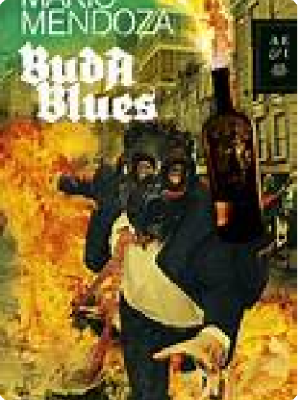
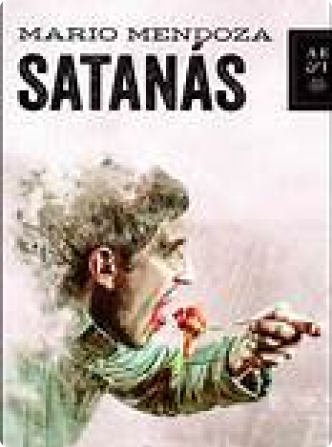

Editorial
Planeta
Planeta
256
2021
9789584293176
Libro destacado
Ficción moderna
Narrativa
León Soler es un psiquiatra soltero y sin hijos que se acerca a los cuarenta años y sigue atrapado en una rutina poco feliz y carente de brillo. Vive apenas obsesionado con su profesión, hasta que una mañana recibe una extraña carta en su consultorio. Va sin remitente y tiene el dibujo de un murciélago que sostiene un letrero con el mismo término que usó el artista Durero en su famoso grabado: La Melancolía. El contenido de esa y futuras correspondencias sacudirán a Soler, lo llevarán al pasado de su niñez y lo moverán emocionalmente en el presente para tratar de encontrar a su viejo amigo, Alfonso Rivas, un hombre deforme, enano y jorobado que le ha devuelto, sin saberlo, el favor más grande: salvarlo del extravío como solo un navegante es capaz de encontrarse a sí mismo mientras sortea la furia de los océanos. ¿De dónde venimos y qué es esto que somos hoy en día? Esta novela habla del valor de la amistad, el deseo, la lealtad y la memoria como salvavidas de unos héroes anónimos, atormentados y desgastados por el tiempo, que buscan rescatar lo mejor de sí y demostrar que no todo está perdido, porque el viaje, el verdadero viaje, siempre opera dentro del hombre cambios sustanciales.
ÉXITO EN VENTAS
PELICULA Y COMIC
LIBRO DESTACADO